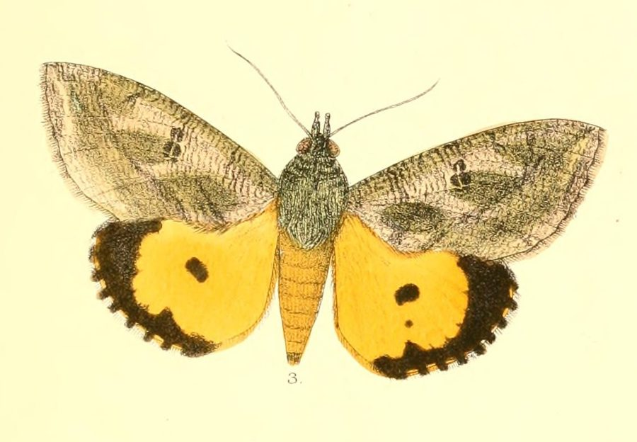

फल भेदक पतंगाDot-underwing Fruit-piercing Moth
Eudocima materna · Erebidae · INS-0160

- Scientific name वैज्ञानिक नाम
- Eudocima materna (Linnaeus, 1767)
- Family कुल
- Erebidae
- Hindi हिंदी
- फल भेदक पतंगा
- Local names स्थानीय नाम
- dot-underwing fruit-piercing moth, dot underwing fruit piercing moth, moth
- Status here यहाँ की स्थिति
- native
- Movement आवागमन
- Resident, here all year
- Known from कहाँ दर्ज
- Others have published records from the Basti–Ayodhya districts बस्ती–अयोध्या के ज़िलों से दूसरों के प्रकाशित अभिलेख
- IUCN IUCN
- not evaluated
- Review समीक्षा
- audited and independently read
When to look कब देखें
Present all year. साल भर मौजूद।
Uses and possibilities उपयोग और संभावनाएँ
Drawn from the documented uses in the profile below, where each is labelled traditional, current or a research lead. All uses →
फल भेदक पतंगा / Dot-underwing Fruit-piercing Moth
Eudocima materna (Linnaeus, 1767) — Erebidae
फल भेदक पतंगा — यह एक मध्यम आकार की, शक्तिशाली रात की पतंगा है जो मंगो, पपीते, और दूसरे फलों को भेदकर रस पीती है। इसके पंख भूरे या काले होते हैं, और अगले पंखों पर सफ़ेद बिंदु या धब्बे होते हैं। इसका सबसे खास गुण यह है कि इसकी सूंड (proboscis) कठोर और तीव्र होती है, जो फलों की कठोर त्वचा को भेद सकती है। यह नुकसान देह कीट है क्योंकि यह बाज़ार के लिए फलों को बेकार बना देता है। गर्मी के मौसम में इसके कई पीढ़ी एक साथ होती हैं।
Quick Identification त्वरित पहचान
| Feature | Description |
|---|---|
| Size | Medium-sized moth; wingspan 40–50 mm |
| Colour | Dark brown or black; forewing with pale cream or white spots; hindwing with characteristic white spots |
| Wings | Forewing dark with scattered white spots; hindwing (underwing) pale with white or pale spots |
| Body | Stout, brown or black |
| Proboscis | Thick, hard, sharp; capable of piercing fruit skin |
| Flight | Strong, direct; active at night |
Field tip: A medium-sized brown-black moth with white spots on the wings, found in fruit orchards. Look for the thick, pointed proboscis. Evidence of damage includes needle-like punctures in fruit with fermented juice leaking out, and moths feeding on damaged overripe fruit.
हिंदी — कैसे पहचानें: मध्यम आकार की, भूरी-काली पतंगा। पंखों पर सफ़ेद बिंदु। सूंड कठोर, तीव्र। पपीते, मंगो के फलों को भेदता है।
Morphology आकारिकी
Biometrics (typical measurements):
| Measurement | Range |
|---|---|
| Wingspan | 40–50 mm |
| Body length | 14–18 mm |
| Forewing length | 18–22 mm |
| Proboscis length | 8–10 mm |
Wings and body:
- Forewing: Dark brown or black with scattered white or cream-coloured spots; pattern variable among individuals.
- Hindwing: Pale brown or buff with distinctive white or pale spots; this contrasting pale hindwing is characteristic and gives rise to the common name "underwing."
- Body: Stout, brown or black, with pale markings along the thorax and abdomen.
Proboscis: Exceptionally thick, hard, and sharply pointed, measuring 8–10 mm. This highly specialized piercing proboscis is adapted for cutting through the tough skin of fruits to access the liquid interior. It is considerably more robust than the proboscis of other Erebidae.
Sexual dimorphism: Males typically have longer, more prominent antennae than females. Females are often larger.
Adaptations: Specialized piercing proboscis; strong mandibles (jaw muscles); powerful wing muscles for strong flight.
Life Cycle / Phenology जीवन चक्र
| Stage / Month | Event |
|---|---|
| Egg | Laid on host plant foliage or fruits; hatches in 3–5 days |
| Larva (instar 1–4) | 3–4 weeks; feeds on host plant leaves and soft fruits |
| Prepupa | 1–2 days |
| Pupa | Formed in soil or plant debris; brown; 7–10 days |
| Adult | Emerges at night; lifespan 3–4 weeks; multiple generations per year |
| Warm season | Continuous generations from April to November |
हिंदी: कैटरपिलर 3–4 हफ़्तों में बड़ा होता है। गर्मी में कई पीढ़ियाँ।
Host Plants or Prey आहार
Larval hosts:
- Mango (Mangifera indica)
- Papaya (Carica papaya)
- Guava (Psidium guajava)
- Passion fruit (Passiflora edulis)
- Other fruiting plants
Adult feeding:
- Pierces and feeds on the juice of ripe or overripe fruits
- Particularly attracted to fermented, damaged, or bruised fruits
- Also feeds on nectar, tree sap, and fermenting fruit juice
- Feeds on rotting fruits and damp surfaces
Predators / Natural Enemies शत्रु
- Parasitoid wasps: Specialized wasps parasitize caterpillars and pupae.
- Parasitoid flies: Tachinid flies parasitize larvae.
- Predatory insects: Ground beetles feed on pupae in soil.
- Birds: Insectivorous birds feed on adults.
- Spiders: Hunting and web-building spiders catch adults.
Agricultural / Human Relevance कृषि प्रासंगिकता
Major pest status. The Dot Underwing Fruit-piercing Moth is a significant pest of mango, papaya, and other fruit crops in tropical regions. Adult moths pierce the skin of ripening or ripe fruits, creating entry points for secondary infections and rendering the fruits unmarketable. A single moth can damage numerous fruits in a single night. Economic damage can be severe in orchards where the species is abundant.
Damage pattern: Characteristic needle-like punctures appear in fruit skin, often with fermented juice leaking from the wound. Secondary infections and rotting may follow.
Today. Common in all tropical fruit-growing regions; populations are managed through cultural practices, monitoring, and control measures in commercial orchards.
Research direction (a lead, not a result). Fruit-piercing moth biology and phenology in eastern Uttar Pradesh; host-plant preferences and damage patterns; population dynamics in mango and papaya orchards; cultural and chemical control strategies; attractants for monitoring.
हिंदी: मंगो और पपीते के बागों में नुकसान देह कीट है। फलों को सड़ा देता है।
Expected Locally स्थानीय रूप से अपेक्षित
Not a field record. Written from published accounts for eastern Uttar Pradesh. No confirmed local sighting yet — if you have seen it, that is what the atlas needs.
अभी तक स्थानीय पुष्टि नहीं। यह विवरण प्रकाशित स्रोतों से है, किसी अवलोकन से नहीं।
Expected in mango orchards, papaya gardens, and fruit-growing areas throughout Basti district, particularly during warm months (April–November) when fruits are ripening. Moths are most active at night and are attracted to overripe and fermenting fruits. Evidence of their presence includes characteristic needle-like punctures in fruits with fermented juice visible at the wounds.
Distribution वितरण
Global range: Widespread across tropical Asia, including India, Myanmar, Thailand, Indonesia, and extending to the Pacific Islands. Also recorded from Africa.
In India: Common throughout the country in all fruit-growing regions, particularly in tropical and subtropical areas.
In Uttar Pradesh: Present in fruit-growing regions; particularly important in mango and papaya-growing areas.
In Basti district / eastern UP: Expected in all fruit orchards and fruit-growing areas.
Research Questions शोध प्रश्न
Anyone can investigate these | कोई भी इन प्रश्नों की जाँच कर सकता है
- How many fruits can a single moth damage in one night? / एक रात में कितने फलों को भेदता है? — Place unripe and ripe fruits in a cage with a single moth; count punctures.
- What fruit ripeness stage is most attractive to egg-laying females? — Offer different fruit ripeness stages; count eggs laid on each.
- How quickly do secondary infections develop after a fruit is pierced? — Pierce fruits with a needle; monitor for fungal or bacterial infection.
- Which fruit tree species (mango, papaya, guava) suffers the greatest damage? / किस फल को सबसे ज़्यादा नुकसान होता है? — Assess damage in orchards with mixed plantings.
- How effective are light traps in monitoring moth populations in orchards? — Place light traps; record nightly catch; correlate with damage.
Similar Species मिलती-जुलती प्रजातियाँ
| Species | How to tell apart | हिंदी |
|---|---|---|
| Eudocima other species | Closely related; similar wing patterns; require close examination; different geographic ranges | अन्य यूडोसीमा प्रजातियाँ — बहुत समान |
| Other fruit-piercing moths | Various families and patterns; different piercing proboscis structure; different pest host ranges | दूसरी फल भेदी पतंगाएँ — अलग प्रजातियाँ |
Field rule: A medium-sized brown-black moth with pale spots on wings, found in fruit orchards, with a thick, hard, pointed proboscis, combined with characteristic needle-like punctures in mango and papaya fruits, identifies the Dot Underwing Fruit-piercing Moth.
Taxonomy & Classification वर्गीकरण
Original description. Described by Linnaeus in 1767 in Systema Naturae, 12th edition, from Asian specimens. Type locality is Asia (India). The genus name Eudocima comes from Greek, meaning "well-fitting" or "well-arranged"; the specific epithet materna is Latin for "maternal" or "of the mother."
Subspecies. Monotypic — no subspecies are currently recognised, though geographic variation occurs.
Family and order placement. Order Lepidoptera, family Erebidae (formerly Noctuidae for some fruit-piercing moths). The Erebidae are nocturnal moths with diverse feeding ecologies and behaviours.
Phylogenetic notes. Eudocima materna is phylogenetically related to other Old World Eudocima species within the subfamily Calpinae.
IUCN status rationale. Not formally assessed. Abundant and widespread; no conservation concerns.
Photo Gallery फोटो गैलरी
No photos yet — add field photos to media/species/dot_underwing_fruit_piercing_moth/ and run node scripts/sync_photos.js.
Wanted:
- Adult moth showing wing pattern and spots
- Moth's head and proboscis (showing piercing structure)
- Damaged fruit with characteristic punctures
- Larva on host plant (if available)
References संदर्भ
- Linnaeus, C. (1767). Systema Naturae. 12th edition, Vol. 1, p. 847. [original description]
- Nayar, K.K., Ananthakrishnan, T.N. & David, B.V. (1989). General and Applied Entomology. 2nd edition. McGraw-Hill, New Delhi.
- Chakraborti, N. & Mitra, S. (1993). Feeding behaviour of fruit-piercing moths and their relation to disease transmission in fruits. Indian Journal of Entomology, 55(2): 145–152.
- Subramanian, K.A. (ed.). (2006). Lepidoptera of the Western Ghats, India. Zoological Survey of India, Kolkata.
- Kumar, A. & Singh, R. (2004). Management of mango fruit-piercing moths: A review. Indian Journal of Horticulture, 61(3): 201–210.
- GBIF Occurrence Data — Eudocima materna, Asia (2010–2025). GBIF taxon key: 1314016.
Source file: species/fauna/insects/dot_underwing_fruit_piercing_moth.md